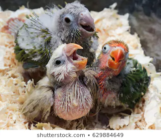
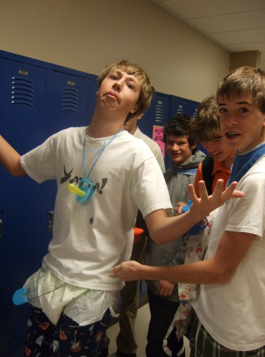
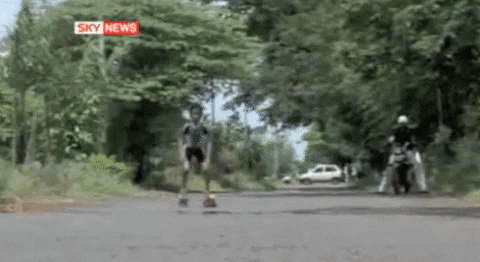

Hello everyone! Welcome to the official fan page for David Scott Flack!
STOP! Please click
here
before continuing through this site.
If you don't know already, David is basically the best guy ever. I
should know, I'm his wife! He's sweet, funny, and incredibly smart (one
might even call him a lab coat). Feel free to browse this page to learn
a little more about him.
From Humble Beginnings
David was born on a snowy day in May 24 years ago. To James Herbert
Flack and Lynn Ida Flack (nee Lackey). While David was the only human
baby in his family's home, he found companionship in his parrot brothers
and sisters.

Days in the Schoolyard
As David grew older his social network expanded. In school, he may not
have learned to color within the lines, but he did make a ragtag group
of friends that inspired him to act and dress as his best self.

Chaptown Baybee
Once David was out of diapers and a true latin aficionado, he left the
Rocky Mountains and headed to the west coast to attend Chapman
University. He was ready to light up the stage with his cheeky face and
rollerblade around the town. Little did he know, he was about to meet
the best woman ever.

Twue Luv
When Zoe met David she thought he was too good to be true. Luckily,
David reciprocated her feelings and asked her out. Their love quickly
flourished. David introduced Zoe to
Star Wars,
Master and Commander, and
Moby Dick. Zoe taught David how to appreciate
coffee, and that's about it. But he still liked her for some reason.
Route 66
After graduation, David and Zoe headed from LA to Chicago, making a few
month pit stop in Colorado. After years of hoping and hint dropping,
David finallyyyyyyy popped the question and David and Zoe got hitched!
What Now?
Soooo now David and Zoe are living their best life in a little studio in
Chicago. David is a fancy pants programmer and is teaching his wife on
the side...I think he's doing a pretty good job ;)


.gif)